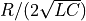
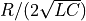
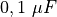

UNTRANSLATED .. 4.4
Transient response of LCR circuits¶
Objective
Explore the oscillatory nature of L and C in series. Resonant frequency
of series LC circuit is given by  . The damping
factor is , and it is equal to 1 for critical
damping (http://en.wikiversity.org/wiki/RLC_circuit). Depending
upon the value of C/L and R, the response could be under-damped,
critically-damped or over-damped.
. The damping
factor is , and it is equal to 1 for critical
damping (http://en.wikiversity.org/wiki/RLC_circuit). Depending
upon the value of C/L and R, the response could be under-damped,
critically-damped or over-damped.


Procedure
- Start with the coil and  capacitor
- Click on 5->0V STEP. Adjust x-axis and repeat if required.
- FIT the graph to find the resonant frequency & Damping.
- Repeat with a resistor between OD1 and the inductor.
- Repeat the experiment with different values of L, C and R
Discussion
We have used the 3000 turn coil and a capacitor. The voltage
across the capacitor after a 5 to 0V step is shown in figure. The
measured resonant frequency tallies with  ,
within the component tolerance values.
,
within the component tolerance values.